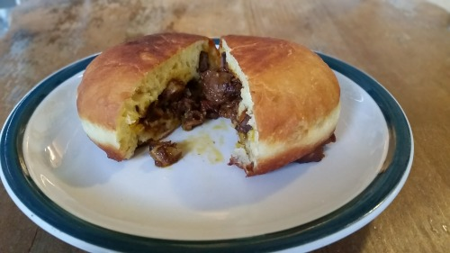

Sebastian's Chocolate Curry Bun

Recreate the famous Chocolate Curry Bun Recipe by Sebastian from the hit Anime "Black Butler". (I know it doesn't sound tasty)
Ingredients
Curry Roux:
- Butter: 3 tbsp.
- Flour: 1/3 cup
- Black Pepper: 1-2 tsp. freshly ground (adjust for spiciness)
- Tomato Paste: 1 tbsp.
- Worcestershire Sauce: 1 tbsp.
Dough:
- Flour: 2 1/2 cups all-purpose
- Yeast: 1 tsp. dry
- Sugar: 2 tbsp.
- Salt: 1 tsp.
- Milk Powder: 1 tbsp. skim
- Water: 1/2 cup
- Egg: 1
- Butter: 2 tbsp.
Filling:
- Oil: 2 tbsp.
- Onion: 1 small, thinly sliced
- Garlic: 1 clove, minced
- Beef: 1/2 lb chuck or stew meat, cubed
- Red Wine: 1/4 cup (or 1/8 cup balsamic + 1/8 cup grape juice)
- Carrot: 1
- Potato: 1 pre-cooked medium yukon gold
- Apple Puree/Sauce: 1 tbsp.
- Cardamom: 1 pod
- Star Anise: 1 pod
- Bay Leaf: 1
- Peas: 1/3 cup (optional)
- Chocolate: Half bar dark
Recipe Instructions
- Make the Roux: Melt butter on medium-low. Add flour, whisk until golden. Stir in garam masala, black pepper, tomato paste, and Worcestershire sauce until thick. Remove from heat.
- Dough Prep: Mix yeast, water, and sugar. Wait till foamy (~5-10 min). Add remaining dough ingredients, knead (8-10 min). Cover, let rise till doubled (~1-1.5 hrs).
- Divide dough into 8. Let rest 10 min, covered.
- Meat Prep: In hot oil, pat dry and season beef. Dust with flour. Cook beef 6-7 min each side. Set aside.
- Sauté onion, garlic in oil. Grind cardamom and anise.
- Add beef back, add wine, water, veggies, seasonings, and apple puree. Boil. Simmer till carrots tender (~45 min).
- Stir in roux and chocolate. Cool. Remove bay leaf.
- Assembly: Flatten dough portions, add curry filling, and shape into buns.
- Frying: In hot oil (~1 inch deep), fry buns on medium-low till golden. Flip and cook both sides.
- Cool before serving.
Return to main page